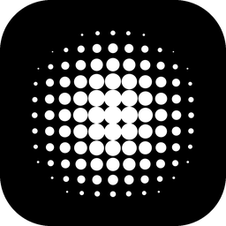
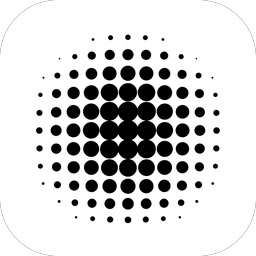
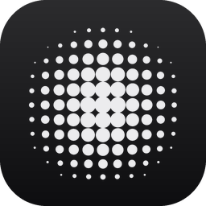
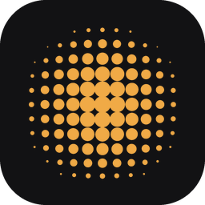
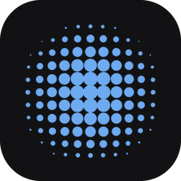
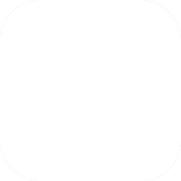

Icône d'iOS 26 : sombre, teintée, transparente
Une proposition seulement : rien n'a changé dans l'app. L'icône reste ton dessin, les points en trame. Seule la façon dont iOS l'affiche dans ses modes change.
Depuis iOS 18, et plus encore avec iOS 26, l'iPhone affiche chaque icône dans quatre apparences : par défaut, sombre, teintée et transparente. Si l'app ne fournit pas une version, le système en fabrique une à sa façon.
Aujourd'hui carré blanc en mode sombre
Le mode sombre de Take affiche l'icône inversée : un PNG opaque à fond blanc (icon-light.png). Sur un écran d'accueil sombre, c'est un carré blanc au milieu des icônes foncées. Apple demande pour le mode sombre un dessin sur fond transparent, pour que le fond sombre du système passe dessous.

Take
TakeA. Sombre, selon Apple proposé
On garde les points blancs, on enlève le fond : en mode sombre, iOS pose son propre fond sombre dessous. Take reste la même icône noire dans les deux modes, comme sur l'écran clair d'aujourd'hui.

TakeB. Teintée
Quand quelqu'un choisit le mode « Teinté », iOS colore toutes les icônes d'une seule teinte. Apple demande une version en niveaux de gris : les points prennent la couleur choisie, sur fond sombre. Ici, deux teintes d'exemple.

Take
TakeC. Transparente (iOS 26)
Le mode « Transparent » d'iOS 26 rend les icônes en verre : le fond d'écran se voit à travers, et les points restent lisibles en blanc laiteux. La maquette l'approche avec un flou du navigateur. Le vrai rendu vient d'iOS, avec ses reflets.

Les quatre, côte à côte
Si tu choisis, comment ça se fait
- Un fichier Icon Composer (
.icon) à deux couches : le fond noir et les points blancs. iOS en tire lui-même les modes sombre, teinté et transparent, et les reflets d'iOS 26. - Expo l'accepte depuis le SDK 54 sous
ios.icon. Il faut un nouveau build, mais aucun code. - Les icônes alternatives (Noir et Blanc) ont aussi besoin de leurs propres variantes.
- Si tu veux garder l'inversion actuelle (blanc en mode sombre), c'est possible aussi : on fournit alors le blanc en variante sombre, mais Apple le déconseille.
Sources : Apple, Human Interface Guidelines « App icons » (apparences par défaut, sombre, teintée et transparente ; le système génère celles qui manquent) ; documentation Xcode « Configuring your app icon » (icône sombre à fond transparent, teintée en niveaux de gris) ; Expo, notes du SDK 54 (fichier .icon sous ios.icon).